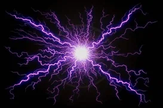
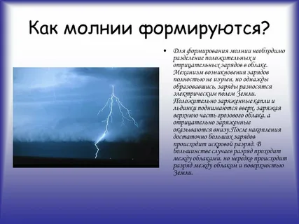
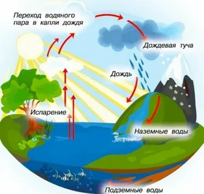
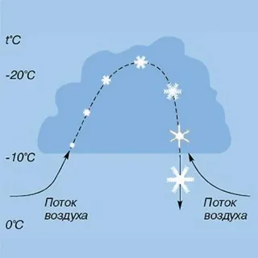
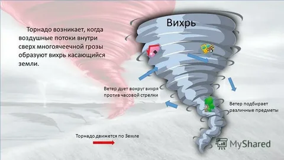
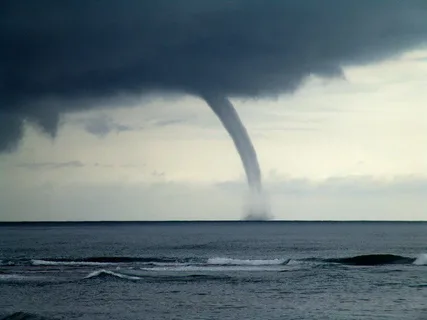
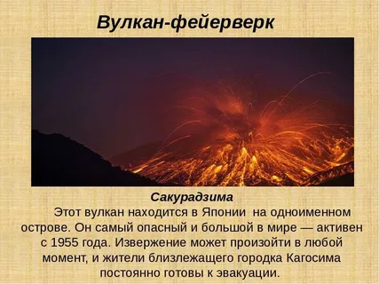

Основная информация
Мо́лния — электрический искровой разряд в атмосфере, происходит во время грозы, проявляющийся яркой вспышкой света и сопровождающим её громом.

Обычно наблюдаются линейные молнии, которые относятся к так называемым безэлектродным разрядам, так как они начинаются (и заканчиваются) в скоплениях заряженных частиц.
Молния — это электрический искровой разряд в атмосфере, который происходит во время грозы. Проявляется яркой вспышкой света и сопровождающим её громом.
Образование молнии: в облаках начинает накапливаться заряд из-за трения частичек пыли и кристалликов льда друг о друга. В некоторый момент заряд облака превышает критический и случается «пробой» — молния ударяет в землю.

Факты о молнии
Молния — это искровой разряд!
Молниевой разряд характеризуется большими токами,
а его температура доходит до 300 000 градусов.
Дождь и информация о нём
Из чего состоит дождь?
Дождь — это атмосферные осадки, которые выпадают в виде капелек пресной воды из облаков.
Размер капель очень важен: если их диаметр меньше 0,5 мм — это морось. Максимальный размер — 6–7 мм.
Дождь образуется следующим образом:
Влага испаряется с водоёмов, почвы, растений, заснеженных пространств и ледников.
На некоторой высоте атмосферный воздух достигает состояния насыщения (100 % относительной влажности) и сталкивается с более холодным слоем воздуха.
Из-за этого столкновения водяной пар начинает конденсироваться, то есть превращаться в жидкость, и формируются мельчайшие капельки.
Капли начинают выпадать в виде осадков, только если значительно укрупняются и тяжелеют.

Снег и как он образуется
Вода испаряется с земной поверхности и поднимается в атмосферу.
В облаках капли воды меняют форму и размер, соединяясь друг с другом.
Под собственным весом капли опускаются на землю.
В процессе полёта они замерзают из-за низкой температуры воздуха, долетая до нас в форме снежинок.
Пока воздух остаётся холодным, снежинки держат свою форму. Так, постепенно покрывая землю, они превращаются в целые сугробы.

Уроган и смерч
Как образуется уроган?
Ураганы образуются в тропических широтах, над океаном. Возникновение урагана объясняется такими причинами:
разница в величинах атмосферного давления;
разница в температурах верхних и нижних слоев атмосферы;
сила вращения Земли.
Чтобы возник ураган, температура воды должна подниматься минимум до +27 °С.
Ураган возникает, когда тёплый и влажный воздух, вступающий в контакт с водой океана или моря, начинает подниматься. Достигнув больших высот, он конденсируется, выделяя тепло, которое заставляет подниматься и конденсироваться другие массы горячего воздуха.
Когда скорость ветра достигает 110–130 км/ч, это становится ураганом.

Смерч и как он образуется
Смерч образуется в больших грозовых тучах, в которых вращаются сильные ветры. Такое облако называют суперъячейкой.
Причина возникновения смерча — разница в температуре и влажности воздуха на разных высотах суперъячейки. Когда поднимающийся тёплый и влажный воздух сталкивается с опускающимся холодным и сухим, происходит конвекция — передача тепла потоками ветра.
По мере движения грозовой тучи вращающийся восходящий поток, который называют мезоциклоном, втягивает всё больше тёплого воздуха и увеличивает скорость своего вращения. Из него образуются капли воды, создавая воронкообразное облако. Оно продолжает разрастаться и, наконец, касается земли, превращаясь в торнадо.

Вулкан
ВУЛКАН – это геологическое образование, возникающее над каналами и трещинами в земной коре, по которым на земную поверхность извергаются расплавленные горные породы (лава), пепел, горячие газы, пары воды и обломки горных пород. Различают действующие, уснувшие и потухшие вулканы, а по форме – центральные, извергающиеся из центрального выводного отверстия, и трещинные, аппараты которых имеют вид зияющих трещин и ряда небольших конусов. Основные части вулканического аппарата:
магматический очаг (в земной коре или верхней мантии);
жерло - выводной канал, по которому магма поднимается к поверхности;
конус – возвышенность на поверхности Земли из продуктов выброса вулкана;
кратер – углубление на поверхности конуса вулкана.
Современные вулканы расположены вдоль крупных разломов и тектонически-подвижных областей. На территории России активно действующими вулканами являются: Ключевская Сопка и Авачинская Сопка (Камчатка).
Опасность для человека представляют потоки магмы (лавы), падение выброшенных из кратера вулкана камней и пепла, грязевые потоки и внезапные бурные паводки. Извержение вулкана может сопровождаться землетрясением.
КАК ПОДГОТОВИТЬСЯ К ИЗВЕРЖЕНИЮ ВУЛКАНА
Следите за предупреждением о возможном извержении вулкана. Вы спасете себе жизнь, если своевременно покинете опасную территорию. При получении предупреждения о выпадении пепла закройте все окна, двери и дымовые заслонки. Поставьте автомобили в гаражи. Поместите животных в закрытые помещения. Запаситесь источниками освещения и тепла с автономным питанием, водой, продуктами питания на 3 – 5 суток.
КАК ДЕЙСТВОВАТЬ ВО ВРЕМЯ ИЗВЕРЖЕНИЯ ВУЛКАНА
Защитите тело и голову от камней и пепла. Извержение вулканов может сопровождаться бурным паводком, селевыми потоками, затоплениями, поэтому избегайте берегов рек и долин вблизи вулканов, старайтесь держаться возвышенных мест, чтобы не попасть в зону затопления или селевого потока.
КАК ДЕЙСТВОВАТЬ ПОСЛЕ ИЗВЕРЖЕНИЯ ВУЛКАНА
Закройте марлевой повязкой рот и нос, чтобы исключить дыхание пепла. Наденьте защитные очки и одежду, чтобы исключить ожоги. Не пытайтесь ехать на автомобиле после выпадения пепла – это приведет к выходу его из строя. Очистите от пепла крышу дома, чтобы исключить ее перегрузку и разрушение.
Сакурадзима

На Камчатке самая высокая концентрация вулканов на Земле. По разным источникам их количество — от 160 до 300 и выше. 1
Некоторые действующие вулканы полуострова:
Ключевская Сопка. 25 Высота — 4754 метра. 5 Один из наиболее активных на полуострове, включён в список Всемирного наследия ЮНЕСКО. 2
Карымская Сопка. Высота — 1486 метров. Считается самым активным вулканом на Камчатке. 2
Корякская Сопка. Высота — 3456 метров. Один из самых живописных конусообразных вулканов с идеально правильными формами. 2
Мутновский. Один из самых активных вулканов на полуострове. В его кратере высокая фумарольная активность, грязевые котлы и даже небольшие паро-водяные фонтаны. 1
Большинство активных вулканов Камчатки сосредоточены в южной половине полуострова и относятся к молодому Восточно-Камчатскому поясу.
Шторм иногда называют последствием циклона,
который в свою очередь является областью пониженного давления, вокруг которой образуется вихревый поток, в результате которого сильный ветер, вызывает волны на море. Причина возникновения шторма одна – огромная разница давления в атмосфере на небольших расстояниях.
.webp)
Вспоминаем самые сильные штормы на Черном море.